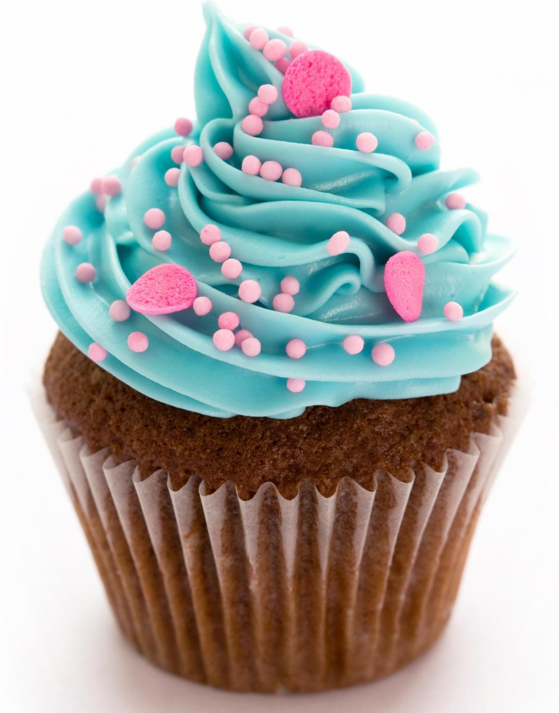

Cupcake´s
¿Que és un Cupcake?
Un cupcake («ó pastel en taza»), también conocido como fairy cake o patty cake, es una pequeña tarta para una persona, frecuentemente cocinada en un molde similar al empleado para hacer magdalenas o muffins. Es una receta de origen estadounidense, e incluye añadidos como glaseados y virutas.
 Este dulce surge en el siglo XIX. Antes de que surgieran los moldes para hacer muffins, solían hacerse en tazones, cazuelas de barro o ramequines, siendo este el significado de su nombre en inglés (cup y cake). También existe otro origen para su nombre, derivado de la forma de medir los ingredientes empleados para su elaboración.
Este dulce surge en el siglo XIX. Antes de que surgieran los moldes para hacer muffins, solían hacerse en tazones, cazuelas de barro o ramequines, siendo este el significado de su nombre en inglés (cup y cake). También existe otro origen para su nombre, derivado de la forma de medir los ingredientes empleados para su elaboración.
La receta base de un cupcake es similar a la de cualquier otra tarta: mantequilla, azúcar, huevos y harina. La mayoría de las recetas para tartas pueden servir, y debido a su reducido tamaño se realizan más rápido que una tarta común. Lo más habitual es que se elaboren en moldes al uso, similares a los empleados para hacer muffins. Servido como un postre, es frecuente en la cocina estadounidense de celebraciones de cumpleaños y fiestas infantiles.
La decoración habitual de los cupcakes es una crema de mantequilla o buttercream a la que se le puede añadir sabor y color para hacerlo aún más vistoso y apetecible.
Historia
Su primera mención puede rastrearse hasta el año de 1796, cuando Amelia Simms utilizó este término para una "tartaleta que se cocina en pequeñas tazas", en su libro American Cookery. La documentación más antigua en la que ya aparece el término cupcakes fue en el recetario de Eliza Leslie Seventy-five Recipes for Pastry, Cakes, and Sweetmeats (Setenta y cinco recetas de pasteles, tortas y dulces) publicado en 1828.
En siglos anteriores, antes de que los moldes para muffins y cupcakes estuvieran ampliamente disponibles, estos se cocinaban a menudo en recipientes de barro individuales o en copas. Por eso, el uso del nombre ha persistido en idioma inglés. El nombre de "Fairy cake" (torta de hadas) es una descripción fantasiosa de su tamaño, ya que según los pasteleros sería apropiado para una fiesta de hadas.
En el siglo XXI, los cupcakes se pusieron de moda en Estados Unidos. En Nueva York, algunas tiendas de cupcakes como Magnolia Bakery han recibido publicidad por sus apariciones en programas populares de televisión de ese país como Sex and the City (Sexo en Nueva York) de la cadena HBO. En el año 2010, la presentadora de televisión Martha Stewart publicó un libro de cocina dedicado a los cupcakes.
| Inicio | Pasos para preparar un Cupcake! 1ª Parte. |